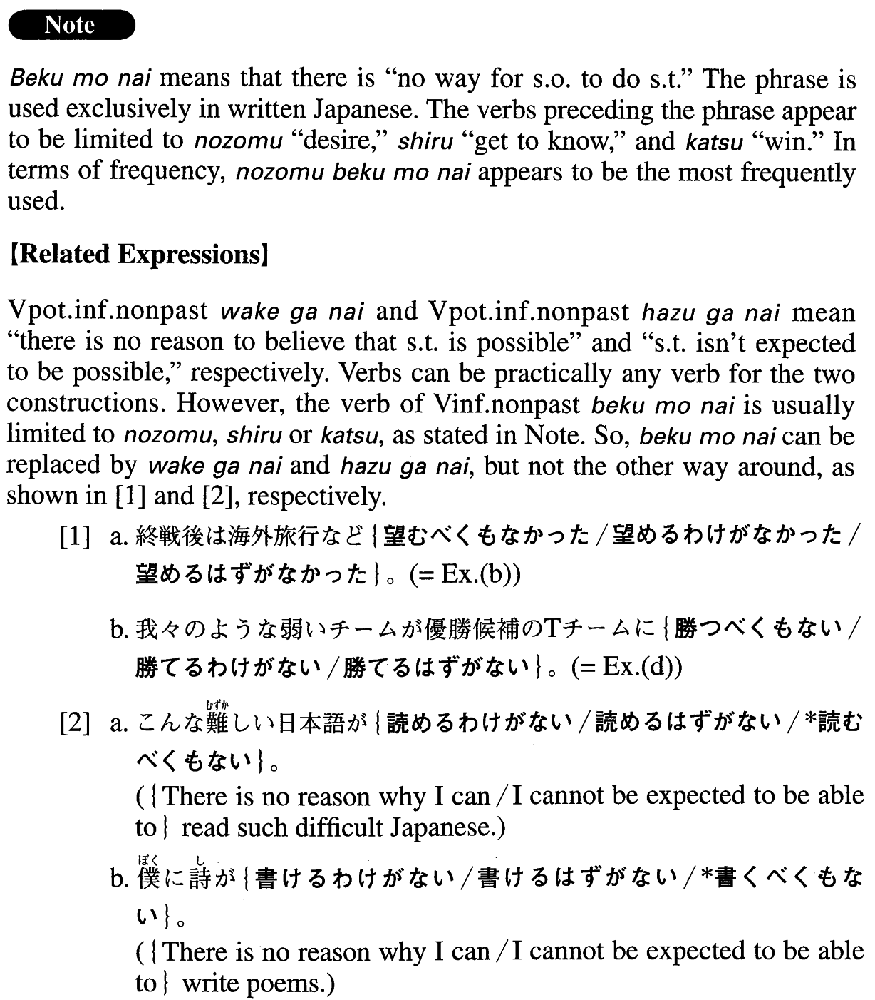

べくもない (A. 34)
- (ks).
- 私が一億円の家を買うなど、望むべくもない。
- It is impossible for me to hope to buy a hundred million yen house.
- (a).
- 十年前に別れた女性の居どころなど知るべくもない。
- There is no way for me to know the whereabouts of the woman I split up with 10 years ago.
- (b).
- 終戦後は海外旅行など望むべくもなかった。
- In the post-war era, one could not even hope to make a trip abroad.
- (c).
- 初日は雨で山頂は望むべくもなかったが、翌日はすっかり晴れ、白銀に輝く山は神々しい美しさだった。
- On the first day, it was impossible to view the summit because of rain, but on the following day, the weather was perfect, and the mountain was shining silvery white. It was sublimely beautiful.
- (d).
- 我々のような弱いチームが優勝候補のTチームに勝つべくもない。
- A weak team like ours simply cannot be expected to beat Team T, one of the competitors for the championship.
- (e).
- その事件が起きた時私は海外旅行中で知るべくもなかった。
- The incident occurred when I was traveling abroad, so there was no way for me to know about it.
- (f).
- 最近は多忙で本を読む時間など期待すべくもない。
- Lately I've been so busy that it is impossible to find (literally: to expect to have) time to read books.
